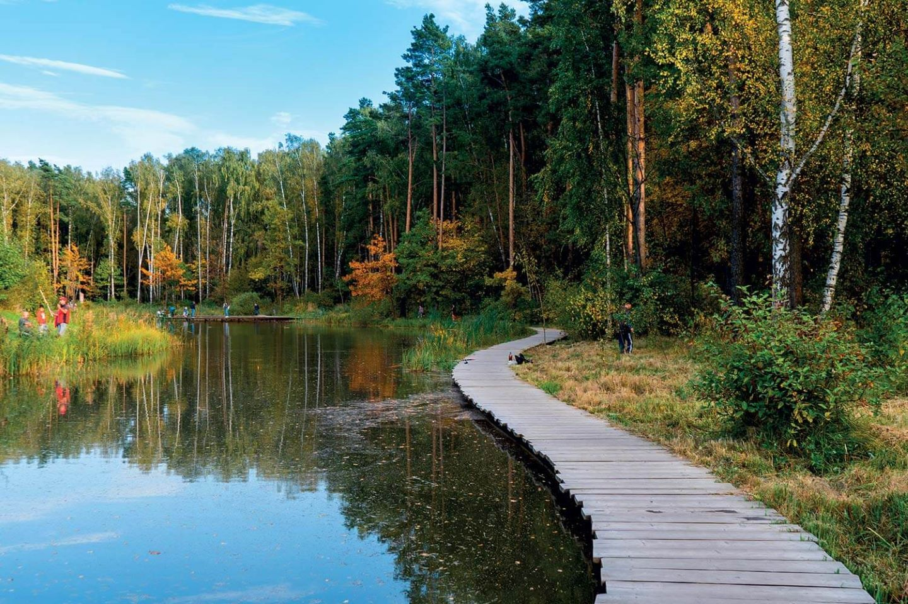

Парк Мещерский


Это огромный лесопарк площадью 465 гектаров, где каждый найдет занятие по душе. Летом здесь можно купаться и загорать на оборудованном пляже, играть в пляжный волейбол и пинг-понг, а зимой кататься на лыжах и беговых лыжах. В парке есть несколько футбольных полей, панда-парк, яблоневый сад и закусочная «Чайная высота» с блинной и бельгийской вафельной. Также на территории парка есть бесплатные туалеты и кафе
- Адрес: Мещерский парк
- Оценка: 5 / 5
- Часы работы: Круглосуточно